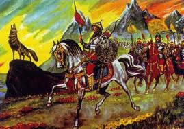

Göç Destanı
- Göç Destanı, bir Uygur destanıdır. Uygur Türklerinin ulusal birliğini koruyan tılsım bozulunca, yurtlarını bırakarak güney batıya doğru nasıl göç ettiklerini anlatır.
- Uygurların vatanında “Hulin” isimli bir dağ vardı. Hulin dağından Tuğla ve Selenge isimli iki ırmak akardı. Bir gece oradaki bir ağacın üzerine gök yüzünden ilâhi bir ışık indi. iki ırmak arasında yaşayan halk bunu dikkkatle izlediler. Daha sonra ağacın gövdesinde şişkinlik oluştu, ilâhi ışık dokuz ay on gün şişkinlik üzerinde durdu. Ağacın gövdesi yarıldı ve içinden beş çocuk göründü. Bu ülkenin halkı bu çocukları büyüttü. En küçükleri olan Buğu Han büyüyünce hükümdar oldu. Ülke zengin halk mutlu oldu. Aradan uzun zaman geçti. Yulug Tigin isimli bir prens hakan oldu. Yulug Tigin, Çinlilerle çok savaştı. Bu savaşlara son vermek için oğlu Gali Tigini bir Çin prensesi ile evlendirmeğe karar verdi. Çinliler , prensese karşılık hükümdardan Tanrı dağının eteğindeki Kutlu Dağ adını taşıyan kayayı istediler. Gali Tigin kayayı verdi. Çinliler kayayı götürmek için kayanın etrafında ateş yaktılar, kaya kızınca üzerine sirke döktüler. Ufak parçalara ayrılan kayayı arabalara koyarak Çin’e taşıdılar. Memleketteki bütün kuşlar, hayvanlar kendi dilleriyle bu kayanın gidişine ağladılar. Bundan yedi gün sonra da Gali Tigin öldü. Kıtlık ve kuraklık oldu. Yurtlarını bırakarak göç etmek zorunda kaldılar.
